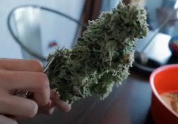

Si tomaste la decisión de comenzar a tener tus propios cultivos de cannabis lo ideal es que
aprendas a conocer tus plantas y todo lo que necesitarás para poder llevar a cabo dichos
procedimientos, efectuar los cuidados, técnicas idóneas para garantizar los mejores resultados y
grandes cosechas de la mejor calidad.
La marihuana es una planta muy versátil que puede llegar a ser cultivada en casa de forma cuidadosa y
desarrollarse de forma óptima en una variedad de climas. Como, por ejemplo, cultivos de interior o
en invernaderos que las ayudarán a mantenerlas durante todo el año. Todo esto dependerá de lo que
decidas hacer, en esta oportunidad queremos enseñarte cuáles son los cuidados básicos para tu
cannabis.
Cuidados de tus plantas en desarrollo
Una vez que hayas evaluado todos estos factores podemos proceder a germinar y obtener nuestra
planta de cannabis. Las semillas contienen toda la información genética de la
variedad que escogiste; sólo necesitarás crear un ambiente óptimo para que inicie su ciclo de vida
y que favorezca a la germinación de la misma.
Posteriormente viene una fase destinada al crecimiento vegetativo de tu planta de marihuana, sus
hojas estarán listas para comenzar a captar toda la luz e iniciar la fotosíntesis y todos los
metabolismos que la mantendrán grande.
Cuando tu planta se encuentre en su etapa de floración, empezará a producir su olor característico,
además de que sus flores empezarán a adoptar la estructura característica de su variedad. Por lo
general esta fase consta de diferentes etapas que son similares en todas las plantas de cannabis;
por lo que debes cuidar la coloración, aspecto de sus hojas, la presencia de plagas, manchas,
hongos y determinar a tiempo si tu planta luce enferma.
Luego viene la etapa de la cosecha, realizar el secado y curado de los cogollos que hayas
obtenido. Será necesario que previamente abandones el uso de fertilizantes y que realices un lavado
de raíces con agua, para garantizar que el sabor sea puro y no se vea alterado por químicos.
